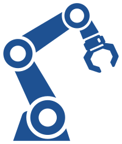
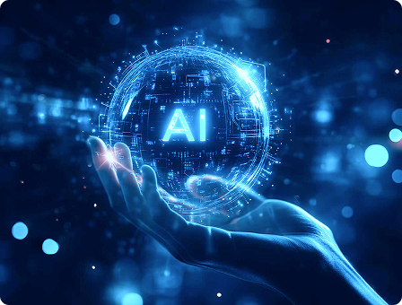

lavori nella robotica
La Robotica unisce intelligenza artificiale e Ingegneria per creare macchine intelligenti che eseguono compiti complessi con precisione.
I "lavori del futuro" sono professioni che nascono o si trasformano a causa dei cambiamenti nella società e nella tecnologia.

La Robotica unisce intelligenza artificiale e Ingegneria per creare macchine intelligenti che eseguono compiti complessi con precisione.
I lavori nello Spazio comprendono diverse professioni che si occupano di progettare, gestire ed esplorare tecnologie
La Sostenibilità offre diverse opportunità di lavoro per proteggere l’ambiente e sviluppare soluzioni innovative.
Secondo il World Economic Forum, il 50% delle professioni attuali potrebbe essere automatizzato entro il 2025, ma questo non significa che i robot sostituiranno completamente l’uomo. L’automazione cambierà il lavoro, eliminando alcune mansioni ma creando nuove opportunità.
In questo contesto, saranno sempre più importanti competenze come creatività, pensiero critico e capacità di adattarsi. Il futuro del lavoro sarà quindi basato sulla collaborazione tra esseri umani e tecnologia, non sulla loro sostituzione.

L'intelligenza artificiale non è più un concetto futuristico, ma una realtà concreta che sta già trasformando il modo in cui le aziende operano e prendono decisioni. Se da un lato rappresenta uno strumento utile per aumentare efficienza e produttività, dall'altro sta anche cambiando profondamente il mercato del lavoro.
Molte professioni stanno evolvendo, diventando più veloci e tecnologiche, mentre altre, soprattutto quelle basate su attività ripetitive, rischiano di scomparire del tutto o di essere radicalmente trasformate.